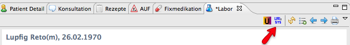
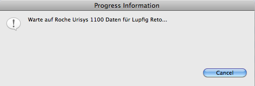

At.medevit.elexis.connect.urisys1100
Contents
Elexis Laborgeräteanbindung Roche Urisys 1100
Bezeichnung: Elexis Laborgeräteanbindung für das Roche Urisys 1100 – Urisys 1100 Author: Marco Descher <descher@medevit.at>Beschreibung: Dieses Plugin realisiert die Anbindung des Roche Urisys 1100 Reflexionsphotometers zur Auswertung von Harnteststreifen. |
Anforderungen
Diese Plug-In benötigt Elexis in einer 2.1 Version.
Installation
Die Installation des Plug-Ins selbst erfolgt mittels des Konfigurators, es müssen keinerlei spezielle Massnahmen ergriffen werden.
Konfiguration
Das Plug-In muss für die Verwendung in der Einstellungsseite konfiguriert werden, siehe Grafik. Es wird nur die Unidirektionale Kommunikation unterstützt.
Hier bei muss der Com-Port (der serielle Anschluss) an dem das Gerät angeschlossen ist gesetzt werden. Das Gerät ist werksseitig
auf die Parameter 9600,n,8,1 gesetzt. Diese werden als Standard angenommen, und sind deshalb nicht zur Konfiguration angeboten,
bitte verändern Sie daher diese Parameter am Gerät nicht.
Sie können eine Mapping-Datei verwenden, um die eingeheneden Resultate bestehenden LaborItems zuzuordnen, näheres dazu unter
“Die Mapping-Datei”.
Wenn Sie möchten, dass nicht bestehende LaborItems automatisch erstellt werden, setzen Sie bitte den Haken bei Laboritem erstellen falls nicht existent.
Importieren von Testresultaten
Um Daten eines Patienten zu importieren, gehen Sie wie folgt vor:
- Selektieren Sie einen Patienten.
- Aktivieren Sie den Roche Urisys 1100 Datenimport. 
- Elexis wird nun auf den Import warten, sie können dies auch mittels Drücken von Cancel abbrechen. 
- Bitte führen Sie jetzt die Messung am Gerät durch, nach Abschluss der Messung wird der Import beendet, und Sie sehen wieder den Laborview. Es wird genau ein Resultat importiert.
- Um den View zu aktualisieren, drücken sie bitte auf die geschwungenen gelben Pfeile (wie in obigem Bild dargestellt), sie sehen jetzt die neu erstellten Laborwerte.
Um die eingehenden Werte einem Laboritem zuzuordnen geht das Plug-In wie folgt vor:
- Es wird in der Mapping-Datei nachgesehen, ob eine Zuordnung existiert, falls ja, wird diese übernommen. Ist diese falsch bricht der Import ab.
- Ist keine Zuordnung in der Mapping Datei vorhanden wird ein bestehendes LaborItem mit identischem Kürzel gesucht. Ist dieses vorhanden wird es zur Erstellung verwendet.
- Ist weder noch der Fall aber das Häkchen auf automatisches Erstellen in den Einstellunge gesetzt, wird ein neues Laboritem erstellt. Ist kein Häkchen gesetzt, bricht der Import mit einer Fehlermeldung ab.
Die Mapping-Datei
Die Mapping Datei ist eine einfache Comma-separated-Value Datei, welche den Testnamen einem existierenden Laboritem zuordnet. Ein Beispiel
für eine solche Datei ist:
TestNameUriSys,LaborwertID SG,d9c1e2abd897579d012
Die erste Zeile dient hierbei als Überschrift und wird ignoriert, bitte übernehmen Sie diese. Der alphanumerische Wert ist die zugehörige
ID, welche aus der Datenbank übernommen werden kann, bitte wenden Sie sich hier an ihr OC.
Open Issues
- Unter Mac OS X kann es bei zu schnellem Aufrufen des Tools zu einer “PortInUseException” kommen. Dieser Fehler ist unter http://rxtx.qbang.org/wiki/index.php/FAQ dokumentiert. Zum Lösen dieses Problemes müsste die neue Version von RXTX installiert werden, diese ist derzeit noch nicht Stable. WORKAROUND: Bitte etwas warten zwischen dem Einlesen von 2 Testresultaten.
| Version: | |
| Kategorie: | |
| Beschreibung: | |
| Author: | |
| Letzte Bearbeitung: | |
| Voraussetzungen: | |
| Betriebssystem: | |
| Lizenz: |
Konfiguration
ToDo
Einführung
ToDo
Funktionen
ToDo
ev andere Untertitel
ToDo
=